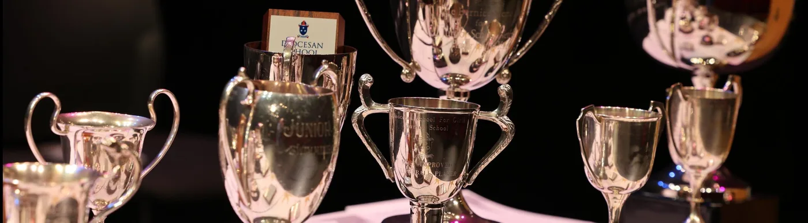

About Me
Kia Ora, my name is Adam. I am a web developer with a passion for creating dynamic and cool websites. I have some experience in HTML, CSS, and JavaScript, and I am constantly learning new technologies to improve my skills.I am of Chinese and Vietnamese descent, and my diverse background inspires me to approach web development with a unique perspective. Whether it's building intuitive interfaces or crafting interactive features, I'm driven by the challenge of bringing creative ideas to life on the web.
Hobbies
I am passionate about working out and hitting the gym, which helps me stay fit and energized. I also love playing video games, exploring new virtual worlds and competing with friends. Hanging out with loved ones and enjoying good food are essential parts of my life, making every day enjoyable and fulfilling.
Skills
I have been adept at math from a young age, which has sharpened my analytical and problem-solving abilities. My gaming skills are top-notch, demonstrating quick reflexes and strategic thinking. Additionally, I have hands-on experience working as a cashier in my parents shop, where I've developed strong customer service and organizational skills.
Awards
I've earned multiple accolades in math, including four top numeracy awards from past schools and numerous Kumon medals. Additionally, I received a prestigious gold Mathletics award, highlighting my exceptional skills and dedication in the subject.